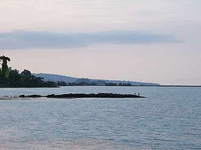

Travel(Bishoftu)
I had the privilege of visiting the enchanting town of Bishoftu , nestled in the Debere Zeyit district of Ethiopia, during my family vacation in 2023. This serene locale boasts the stunning Lake Bishoftu and the equally captivating Hora Lake. The opportunity to witness these natural wonders, along with playful monkeys, made this trip an unforgettable experience
Travel(Lake Tana)
Another unforgettable destination during my Ethiopian adventure was Lake Tana , situated in the beautiful city of Bahirdar. This serene lake is home to a diverse array of bird species and historic monasteries. Exploring this stunning landscape was a truly enriching experience
Take a look at the lovely Lake Tana